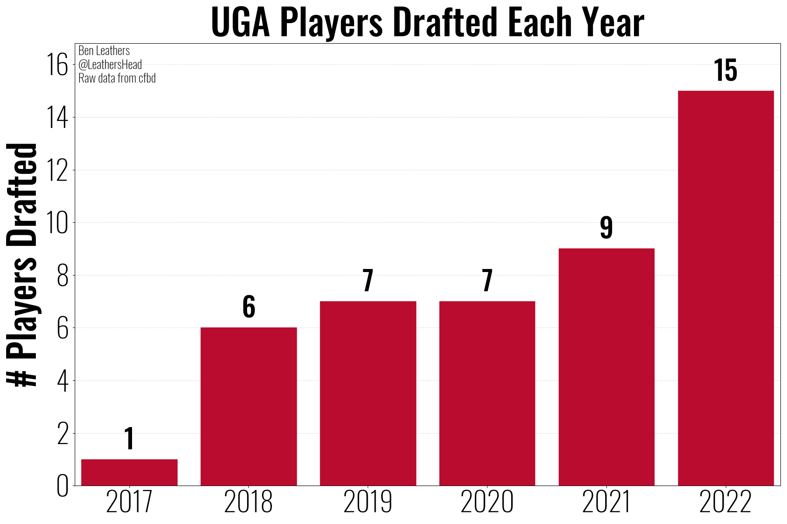
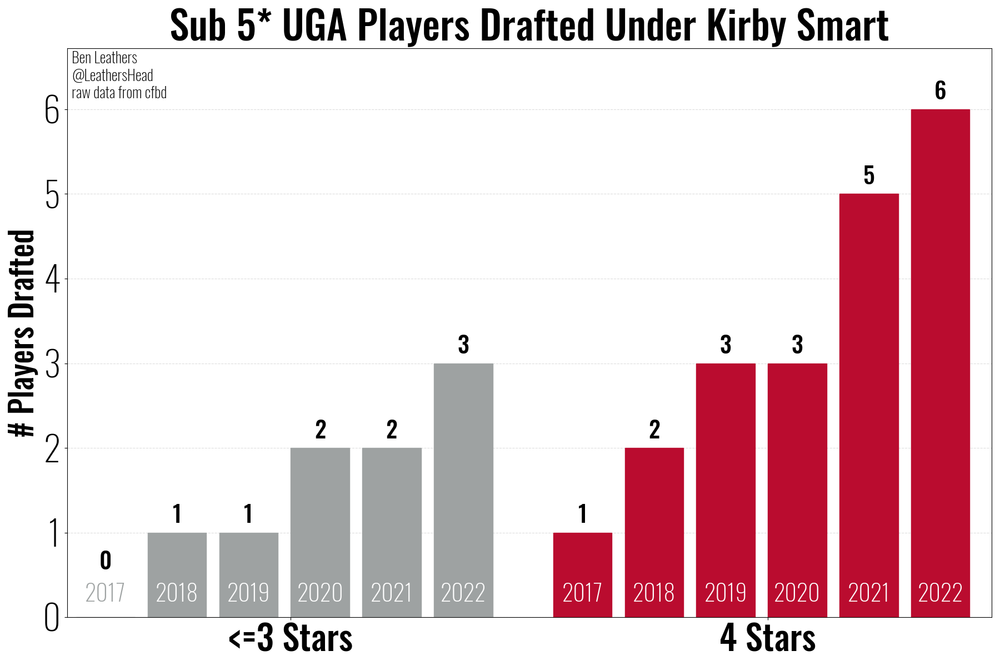
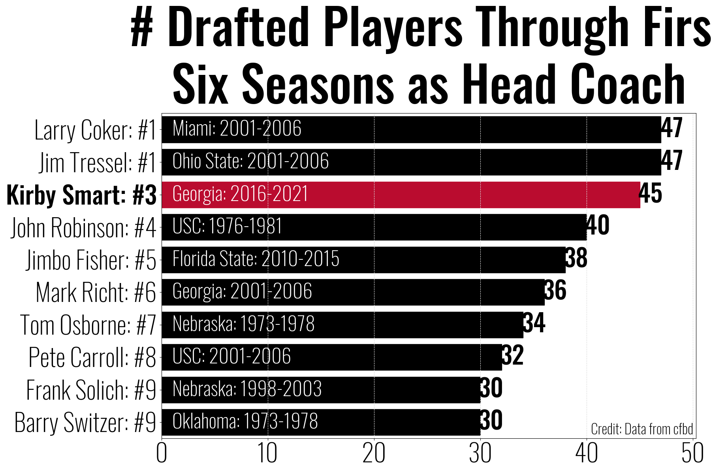
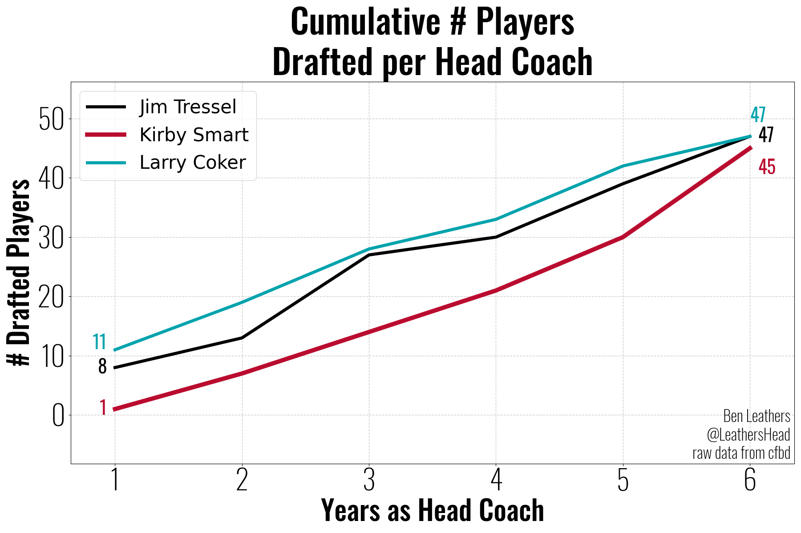
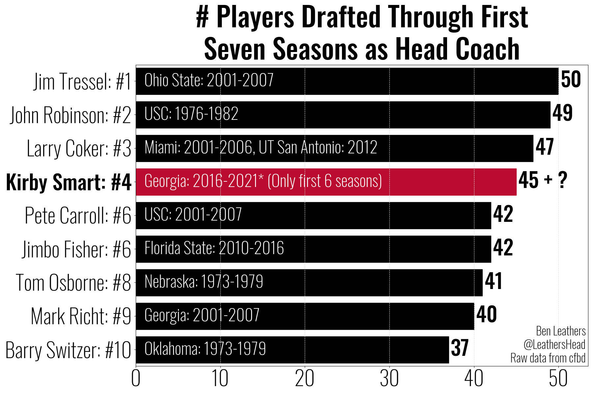
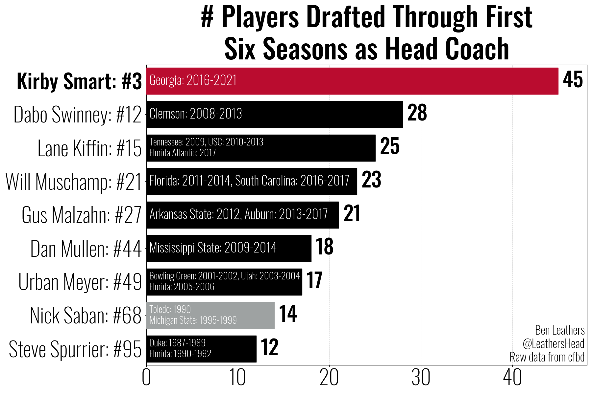
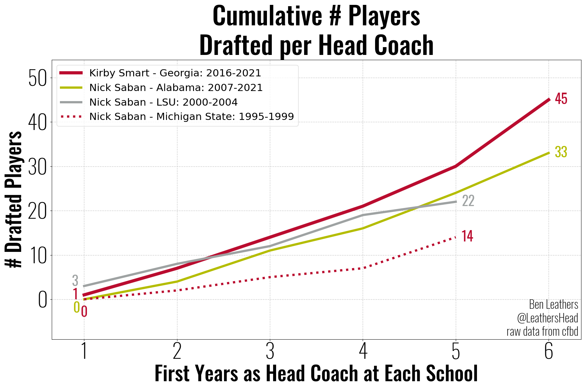
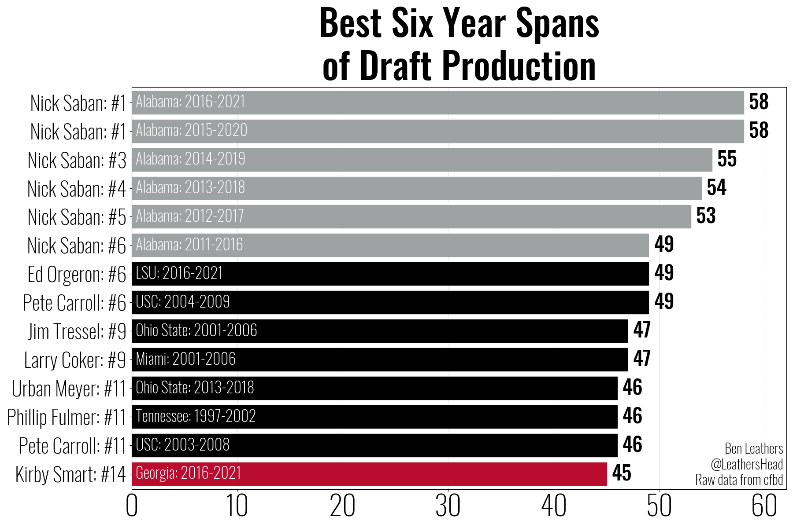
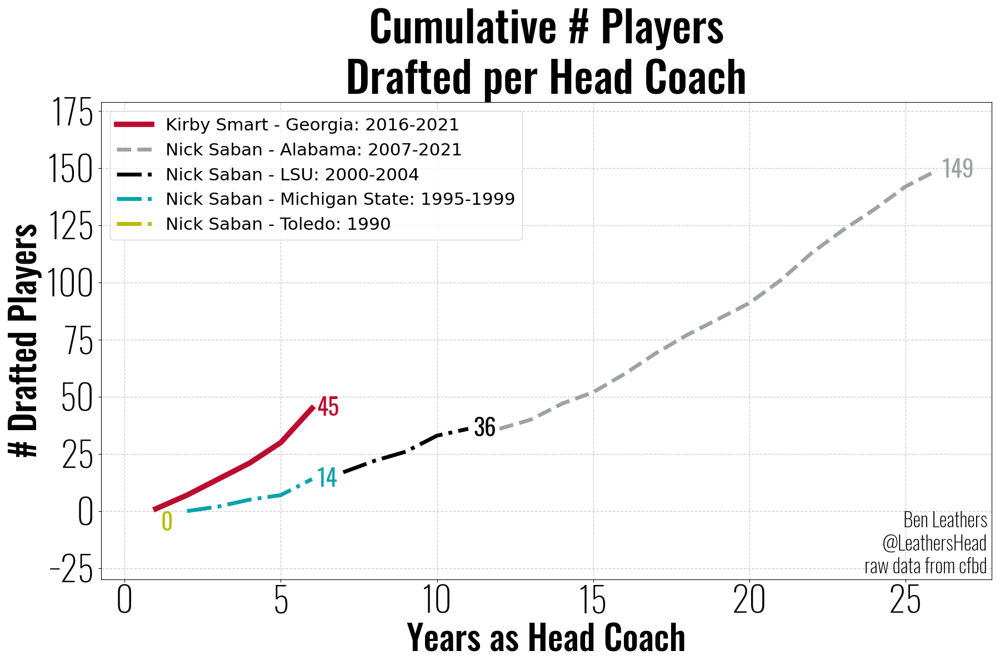

Nick Saban won’t be the G.O.A.T.
An NFL Draft Perspective
By: Ben Leathers
2023-04-17
Clickbait headline aside, Nick Saban is unquestionably the greatest coach in history. However, the interesting thing about “all time” is that it includes the future. Kirby Smart is only 7 seasons into his career as a head coach, and he’s been quite prolific when it comes to putting players into the draft. With the 2023 Draft coming up next week, I wanted to see how the start of Kirby’s head coaching career has looked so far and how he compares to other coaches at the beginning their careers, including Nick Saban. Finally, we’ll look at how his trajectory projects into the future. But first, let’s start with Kirby.
How well has UGA put players into the draft while Kirby Smart has been the head coach?

Wow… could that “up and to the right” trajectory suggest that Kirby’s good at player development?
You might be thinking to yourself… “No, it just suggests he’s recruiting better players” which is a reasonable thing to think. Mark Richt is no question a DGD, and he elevated the program during his tenure. That being said, Kirby inherited a roster whose previous 3 recruiting classes had an average ranking of ~9th in the country, whereas Kirby has averaged rankings of ~3rd as head coach of UGA. So you would be justified to argue that this upward trajectory just points to better recruiting. But is there more to the story?

It’s not just better players. Even the 3 stars are more likely to get drafted the longer they play under Kirby.
How do UGA’s Draft results during Kirby’s first 6 years compare to other coach’s first 6 years?

Seeing Jimbo Fisher at #5 was surprising to begin with, but then I remembered he’s got a reputation for recruiting and he’s developing a reputation for losing recruits now that the transfer portal is a factor. Mark Richt at #6 is less surprising, he was a great coach who did put a lot of talent into the NFL.
So how did Larry Coker and Jim Tressel out perform Kirby in the first 6 years?

Oh, they stepped into programs with loaded rosters that put 8 and 11 players into the NFL in year 1. Kirby didn’t inherit a completely bare roster, but it was certainly more modest.
How many UGA players will need to be drafted in order for Kirby to jump into first in year 7?

What Happened to Larry Coker?
He got fired from Miami after going 6-6 and didn’t coach again until 2012 when he was hired by UTSA.
Let’s check on some coaches that are noticibly absent from the top ten.

In fairness to Saban he didn’t start his heach coaching careers at a blue blood football school, so lets compare the results from the start of each school’s tenure.

Kirby’s start at UGA is out pacing any of Saban’s starts. However, we don’t call him the greatest in history for no reason, so let’s see how things compare when we look at ANY 6 year span…

And there it is. Saban has spent the last 11 years churning out NFL talent at an unprecedented level, and thus he currently occupies the top 6 spots in that ranking.
So while Kirby has certainly gotten the flywheel of player development up to speed quicker than anyone else, the question is, can he sustain that? According to his post G-Day press conference last weekend, UGA is “built to sustain… That’s my motto.”, and by all accounts that looks to be the case.
Let’s take a look at Saban’s entire career to get an idea of what it looks like to sustain, and where the bar has been set.

Wow. That puts “sustain” into perspective. Saban has over 25 years as a head coach, and he’s sustained greatness over that span. Kirby has gotten off to an elite start. Only time will tell if he’ll be able to sustain long enough to cement himself as the G.O.A.T.
Takeaways:
Kirby’s program develops players.
Kirby’s Death Star might not have even been fully operational yet… 🤯
“All Time” includes the future, and while Saban might be the greatest in history, Kirby is on the path to take over and when it’s all said and done…
Saban will not be the G.O.A.T., Kirby will.
This analysis was based on an open source dataset, cfbd, and while I’m confident in my work, I am also confident I’m human, so if you find a mistake, please let me know.